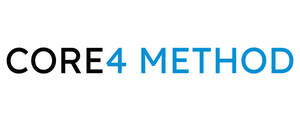

Trade Mark Journal No.2026/006 6 February 2026
UK00004324192 14 January 2026 (41)
Mark 1
CORE 4 METHOD
Mark 2
CORE4 METHOD
Mark 3

- Class 41
- Arranging competitions; audio, video and multimedia production; conducting competitions; education; providing of training; electronic publishing services; organising competitions; production of audio recordings; production of podcasts; production of video and audio recordings; production of video recordings; providing on-line non-downloadable video content; providing online videos, not downloadable; provision of non-downloadable videos; publishing services; rental of dvds; teaching services; training services; video production; information relating to the aforesaid; advice relating to the aforesaid; consultancy relating to the aforesaid; all the aforesaid relating to fitness or exercise; advice relating to physical fitness; aerobic and dance facilities; aerobics training services; entertainment; booking of exercise facilities; conducting fitness classes; conducting physical fitness conditioning classes; photography; conducting training sessions on physical fitness online; consultancy or advice relating to physical fitness training; sporting and cultural activities; consultancy relating to physical fitness; exercise and fitness classes; exercise classes; fitness club services; gym activity classes; gymnasium services relating to body building; gymnasium services relating to weight training; gymnasium services; health and fitness training; information relating to physical fitness; organisation of sporting competitions; personal fitness training services; personal training services; physical fitness centre services; providing fitness and exercise facilities; providing fitness facilities; providing health club and gymnasium services; providing obstacle course training gym facilities; rental of sports or exercise equipment; training in yoga; training of swimming teachers; tuition in physical fitness; advice relating to the aforesaid; consultancy relating to the aforesaid.
The Hub Fitness Group Limited
James Calderbank
Representative: Brand Protect Limited